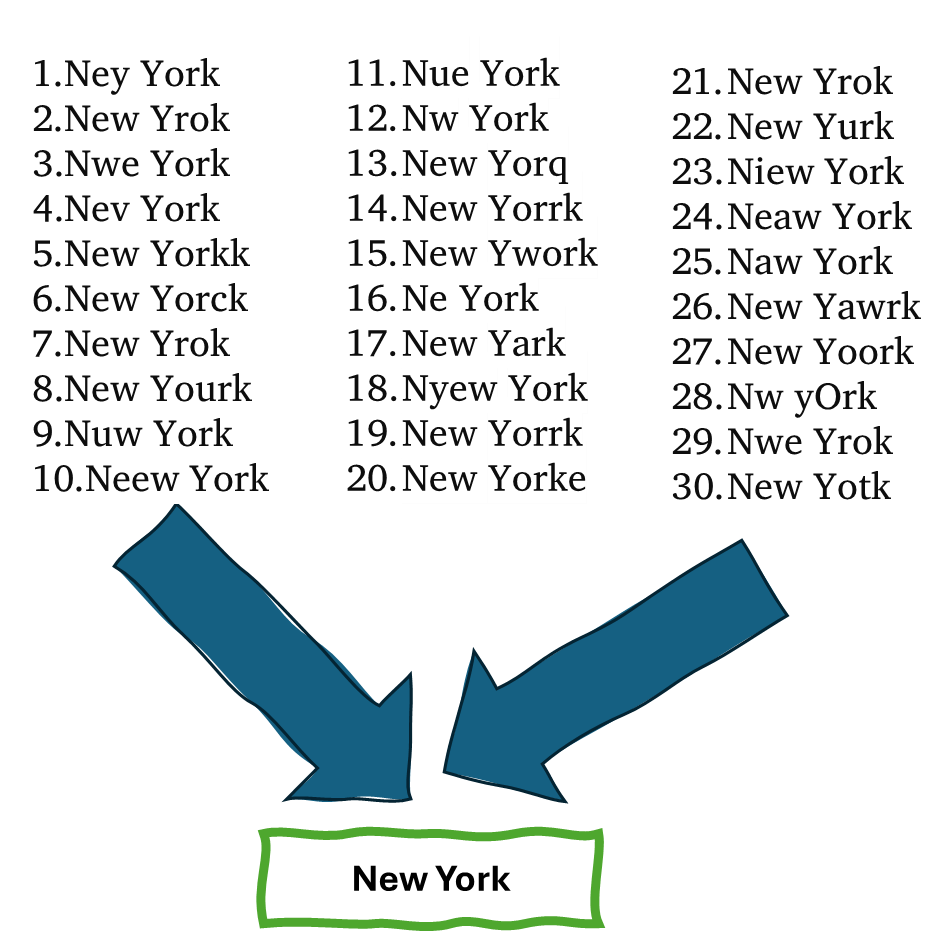
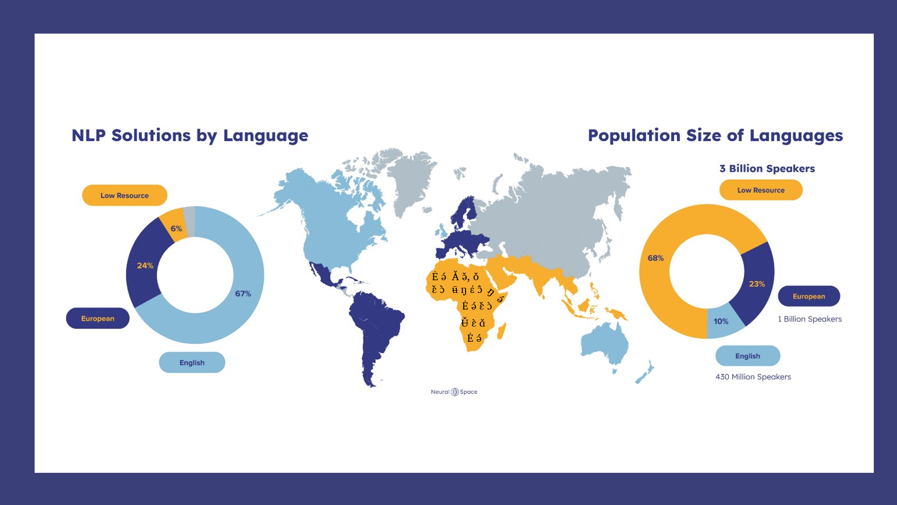

In this project, I developed a comprehensive data management system from the ground up.
Utilizing Python, batch/shell scripts, and various orchestration tools, the system automates the entire process
of data collection from multiple logging devices across different locations.
It seamlessly processes and analyzes the gathered data to identify underperforming entities.
The system is designed to issue daily email alerts to field engineers and decision-makers,
highlighting these weak performers for prompt action.
Additionally, it updates interactive visualizations on a dashboard, providing insights into performance metrics.
This project not only demonstrates advanced skills in parallel processing and data orchestration
but also encompasses expertise in pipeline design, automated monitoring, and data visualization, among others.


Developed a Python suite to streamline video content production. Key features include:
1) Audio Processing: Enhances and merges bilingual tracks, adjusts volume, and removes noise for clear, bilingual outputs.
2) Video Production: Links bilingual audio with text, auto-resizes backgrounds to HD, and intelligently adjusts text and ad placement. Each phrasebook sentence generates a branded video, organized by chapter.
3) Chunk Processing: Groups videos, inserts ads, and merges for seamless viewing.
4) YouTube Scheduler: Automates video uploads to optimize engagement.

The objective of this initiative was to harness the capabilities of deep learning in conjunction with
the 'fuzzy_pandas' package within Python, aiming to identify congruent records within a dataset despite
discrepancies in the nomenclature of categorical fields. This endeavor facilitates the expeditious
purification of data, thereby mitigating the risk of redundancies that could potentially
skew analytical outcomes.

This project harnesses the Word2Vec functionality within the gensim framework to craft a machine learning
model specifically designed to offer related search term suggestions for under-resourced and tonal languages,
addressing the intricate challenges these languages present.

Advancing AI for African Languages
AI development is data-driven, yet African languages often lack the necessary resources. Current fine-tuning
approaches are tailored predominantly for Western languages, which do not account for the subtleties of
tonal African languages. In these languages, tonal variations are crucial as they can alter meanings,
necessitating models that can accurately capture these details. This is vital for pushing AI forward in
the context of African linguistics.
In this project, we embarked on constructing a Language Model (LM) for the Nufi language—a language with scarce data resources. Our initial phase focused on developing a predictive model capable of anticipating the subsequent word in a sequence. Following this, we progressed to generating a model that could create coherent sentences not found in the existing corpus, demonstrating an understanding of language nuances beyond mere data replication.